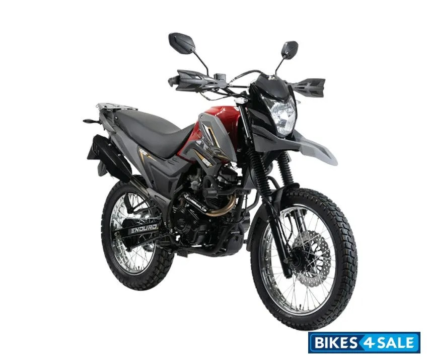

AKT TT 150-200
Una de las primeras moto que conduci, al ser cilindrada 150 pues si daba bien, la pongo en la lista porque a pesar de la cilindrada tenia buen torque 10.9NM
149cc
120 kg
4 Tiempos
11.1hp- 8500RPM